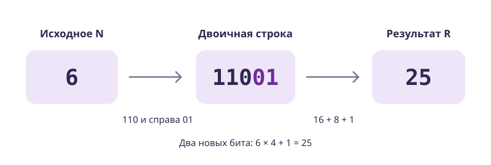

Двоичная запись, команды и поиск результата
После дописывания k битов: R = 2kN + значение хвоста.

Пример: чётному N добавляем 01, нечётному — 10. При N = 7 имеем R = 30, при N = 8 — R = 33. Для R > 30 первое N равно 8: при N ≤ 7 результат не выше 4 · 7 + 2 = 30.
Исходное число N = 13, его запись — 1101.
| Команда | Запись | Проверка числом |
|---|---|---|
| Удалить два последних бита | 11 | 13 // 4 = 3 |
| Заменить последние два на 10 | 1110 | 4 · (13 // 4) + 2 = 14 |
| Дописать 10 слева | 101101 | 2 · 24 + 13 = 45 |
При удалении двух битов берём N ≥ 4. Исходные биты и чётность сохраняем до изменения строки.
Каждый раз дописываем остаток от деления текущего числа единиц на 2.
111 → 1111 → 111101.0. Получаем R = 30.После первого шага единиц всегда чётное число, поэтому второй новый бит равен 0.
Остатки 0, 1, 2 при делении N на 3 задают хвосты 00, 10, 100.
| N | Новая запись | R |
|---|---|---|
| 5 | 101100 | 44 |
| 6 | 11000 | 24 |
Первое совпадение при переборе N по возрастанию даёт минимальное N. Для минимального R сравниваем подходящие результаты до обоснованной границы.
def result(n):
s = bin(n)[2:]
tails = ("00", "10", "100")
return int(s + tails[n % 3], 2)
hits = [(n, result(n)) for n in range(1, 14)
if result(n) > 50]
first_n = hits[0][0]
best_r = min(r for n, r in hits)Проверяем функцию вручную. Здесь при N = 13 уже R = 54, а с N = 14 всегда R ≥ 4N ≥ 56: дальше меньшего подходящего R не будет.
К двоичной записи положительного N справа дописываем 00, если N делится на 3. Иначе дописываем двоичную запись удвоенного остатка N от деления на 3, без ведущих нулей. Новая запись задаёт R.
В каждом решении запиши пару (N, R) и обоснуй, где остановить перебор.
Повтори команды над записью; Д7–Д10 — дополнительно
Самопроверка — из назначенного задания в «Домашке»